Last updated: 2019-05-29
Checks: 6 0
Knit directory: apaQTL/analysis/
This reproducible R Markdown analysis was created with workflowr (version 1.3.0). The Checks tab describes the reproducibility checks that were applied when the results were created. The Past versions tab lists the development history.
Great! Since the R Markdown file has been committed to the Git repository, you know the exact version of the code that produced these results.
Great job! The global environment was empty. Objects defined in the global environment can affect the analysis in your R Markdown file in unknown ways. For reproduciblity it’s best to always run the code in an empty environment.
The command set.seed(20190411) was run prior to running the code in the R Markdown file. Setting a seed ensures that any results that rely on randomness, e.g. subsampling or permutations, are reproducible.
Great job! Recording the operating system, R version, and package versions is critical for reproducibility.
Nice! There were no cached chunks for this analysis, so you can be confident that you successfully produced the results during this run.
Great! You are using Git for version control. Tracking code development and connecting the code version to the results is critical for reproducibility. The version displayed above was the version of the Git repository at the time these results were generated.
Note that you need to be careful to ensure that all relevant files for the analysis have been committed to Git prior to generating the results (you can use wflow_publish or wflow_git_commit). workflowr only checks the R Markdown file, but you know if there are other scripts or data files that it depends on. Below is the status of the Git repository when the results were generated:
Ignored files:
Ignored: .DS_Store
Ignored: .Rhistory
Ignored: .Rproj.user/
Ignored: output/.DS_Store
Untracked files:
Untracked: .Rprofile
Untracked: ._.DS_Store
Untracked: .gitignore
Untracked: _workflowr.yml
Untracked: analysis/._PASdescriptiveplots.Rmd
Untracked: analysis/._cuttoffPercUsage.Rmd
Untracked: analysis/cuttoffPercUsage.Rmd
Untracked: analysis/nascentRNA.Rmd
Untracked: apaQTL.Rproj
Untracked: code/._ApaQTL_nominalNonnorm.sh
Untracked: code/._BothFracDTPlotGeneRegions_normalized.sh
Untracked: code/._FC_UTR.sh
Untracked: code/._FC_newPeaks_olddata.sh
Untracked: code/._LC_samplegroups.py
Untracked: code/._NascentRNAdtPlot.sh
Untracked: code/._NetSeq_fourthintronDT.sh
Untracked: code/._SnakefilePAS
Untracked: code/._SnakefilefiltPAS
Untracked: code/._TESplots100bp.sh
Untracked: code/._TESplots150bp.sh
Untracked: code/._TESplots200bp.sh
Untracked: code/._Untitled
Untracked: code/._ZipandTabPheno.sh
Untracked: code/._aAPAqtl_nominal39ind.sh
Untracked: code/._apaQTLCorrectPvalMakeQQ.R
Untracked: code/._apaQTL_Nominal.sh
Untracked: code/._apaQTL_permuted.sh
Untracked: code/._assignNucIntonpeak2intronlocs.sh
Untracked: code/._assignTotIntronpeak2intronlocs.sh
Untracked: code/._bam2BW_5primemost.sh
Untracked: code/._bed2saf.py
Untracked: code/._bothFracDTplot1stintron.sh
Untracked: code/._bothFracDTplot4thintron.sh
Untracked: code/._bothFrac_FC.sh
Untracked: code/._callPeaksYL.py
Untracked: code/._chooseAnno2SAF.py
Untracked: code/._chooseSignalSite
Untracked: code/._chooseSignalSite.py
Untracked: code/._cluster.json
Untracked: code/._clusterPAS.json
Untracked: code/._clusterfiltPAS.json
Untracked: code/._codingdms2bed.py
Untracked: code/._config.yaml
Untracked: code/._config2.yaml
Untracked: code/._configOLD.yaml
Untracked: code/._convertNumeric.py
Untracked: code/._dag.pdf
Untracked: code/._encodeRNADTplots.sh
Untracked: code/._extractGenotypes.py
Untracked: code/._fc2leafphen.py
Untracked: code/._filter5perc.R
Untracked: code/._filter5percPheno.py
Untracked: code/._filterpeaks.py
Untracked: code/._finalPASbed2SAF.py
Untracked: code/._fix4su304corr.py
Untracked: code/._fix4su604corr.py
Untracked: code/._fix4sukalisto.py
Untracked: code/._fixFChead.py
Untracked: code/._fixFChead_bothfrac.py
Untracked: code/._fixH3k12ac.py
Untracked: code/._fixRNAhead4corr.py
Untracked: code/._fixRNAkalisto.py
Untracked: code/._fixgroupedtranscript.py
Untracked: code/._fixhead_netseqfc.py
Untracked: code/._grouptranscripts.py
Untracked: code/._make5percPeakbed.py
Untracked: code/._makeFileID.py
Untracked: code/._makePheno.py
Untracked: code/._makeSAFbothfrac5perc.py
Untracked: code/._makegencondeTSSfile.py
Untracked: code/._mergeAllBam.sh
Untracked: code/._mergeBW_norm.sh
Untracked: code/._mergeBamNascent.sh
Untracked: code/._mergeByFracBam.sh
Untracked: code/._mergePeaks.sh
Untracked: code/._mnase1stintron.sh
Untracked: code/._mnaseDT_fourthintron.sh
Untracked: code/._namePeaks.py
Untracked: code/._netseqDTplot1stIntron.sh
Untracked: code/._netseqFC.sh
Untracked: code/._peak2PAS.py
Untracked: code/._peakFC.sh
Untracked: code/._pheno2countonly.R
Untracked: code/._qtlsPvalOppFrac.py
Untracked: code/._quantassign2parsedpeak.py
Untracked: code/._removeloc_pheno.py
Untracked: code/._run_leafcutterDiffIso.sh
Untracked: code/._run_sepUsagephen.sh
Untracked: code/._selectNominalPvalues.py
Untracked: code/._sepUsagePhen.py
Untracked: code/._snakemakePAS.batch
Untracked: code/._snakemakefiltPAS.batch
Untracked: code/._submit-snakemakePAS.sh
Untracked: code/._submit-snakemakefiltPAS.sh
Untracked: code/._subset_diffisopheno.py
Untracked: code/._subtrachfiveprimeUTR.sh
Untracked: code/._subtractExons.sh
Untracked: code/._subtractfiveprimeUTR.sh
Untracked: code/._utrdms2saf.py
Untracked: code/.snakemake/
Untracked: code/APAqtl_nominal.err
Untracked: code/APAqtl_nominal.out
Untracked: code/APAqtl_nominal_39.err
Untracked: code/APAqtl_nominal_39.out
Untracked: code/APAqtl_nominal_nonNorm.err
Untracked: code/APAqtl_nominal_nonNorm.out
Untracked: code/APAqtl_permuted.err
Untracked: code/APAqtl_permuted.out
Untracked: code/ApaQTL_nominalNonnorm.sh
Untracked: code/BothFracDTPlot1stintron.err
Untracked: code/BothFracDTPlot1stintron.out
Untracked: code/BothFracDTPlot4stintron.err
Untracked: code/BothFracDTPlot4stintron.out
Untracked: code/BothFracDTPlotGeneRegions.err
Untracked: code/BothFracDTPlotGeneRegions.out
Untracked: code/BothFracDTPlotGeneRegions_norm.err
Untracked: code/BothFracDTPlotGeneRegions_norm.out
Untracked: code/BothFracDTPlotGeneRegions_normalized.sh
Untracked: code/DistPAS2Sig.py
Untracked: code/EncodeRNADTPlotGeneRegions.err
Untracked: code/EncodeRNADTPlotGeneRegions.out
Untracked: code/FC_UTR.err
Untracked: code/FC_UTR.out
Untracked: code/FC_UTR.sh
Untracked: code/FC_newPAS_olddata.err
Untracked: code/FC_newPAS_olddata.out
Untracked: code/FC_newPeaks_olddata.sh
Untracked: code/LC_samplegroups.py
Untracked: code/NascentRNAdtPlot.sh
Untracked: code/NetSeq_fourthintronDT.sh
Untracked: code/README.md
Untracked: code/Rplots.pdf
Untracked: code/TESplots100bp.err
Untracked: code/TESplots100bp.out
Untracked: code/TESplots100bp.sh
Untracked: code/TESplots150bp.err
Untracked: code/TESplots150bp.out
Untracked: code/TESplots150bp.sh
Untracked: code/TESplots200bp.err
Untracked: code/TESplots200bp.out
Untracked: code/TESplots200bp.sh
Untracked: code/Untitled
Untracked: code/Upstream100Bases_general.py
Untracked: code/ZipandTabPheno.sh
Untracked: code/aAPAqtl_nominal39ind.sh
Untracked: code/apaQTLCorrectPvalMakeQQ_4pc.R
Untracked: code/apaQTL_Nominal_4pc.sh
Untracked: code/apaQTL_permuted.4pc.sh
Untracked: code/apaqtlfacetboxplots.R
Untracked: code/assignNucIntonpeak2intronlocs.sh
Untracked: code/assignPeak2Intronicregion.err
Untracked: code/assignPeak2Intronicregion.out
Untracked: code/assignTotIntronpeak2intronlocs.sh
Untracked: code/assigntotPeak2Intronicregion.err
Untracked: code/assigntotPeak2Intronicregion.out
Untracked: code/bam2BW_5primemost.sh
Untracked: code/bam2bw.err
Untracked: code/bam2bw.out
Untracked: code/bam2bw_5primemost.err
Untracked: code/bam2bw_5primemost.out
Untracked: code/bothFracDTplot1stintron.sh
Untracked: code/bothFracDTplot4thintron.sh
Untracked: code/bothFrac_FC.err
Untracked: code/bothFrac_FC.out
Untracked: code/bothFrac_FC.sh
Untracked: code/codingdms2bed.py
Untracked: code/dag.pdf
Untracked: code/dagPAS.pdf
Untracked: code/dagfiltPAS.pdf
Untracked: code/encodeRNADTplots.sh
Untracked: code/extractGenotypes.py
Untracked: code/fc2leafphen.py
Untracked: code/finalPASbed2SAF.py
Untracked: code/findbuginpeaks.R
Untracked: code/fix4su304corr.py
Untracked: code/fix4su604corr.py
Untracked: code/fix4sukalisto.py
Untracked: code/fixFChead_bothfrac.py
Untracked: code/fixFChead_summary.py
Untracked: code/fixH3k12ac.py
Untracked: code/fixRNAhead4corr.py
Untracked: code/fixRNAkalisto.py
Untracked: code/fixgroupedtranscript.py
Untracked: code/fixhead_netseqfc.py
Untracked: code/get100upPAS.py
Untracked: code/getSeq100up.sh
Untracked: code/getseq100up.err
Untracked: code/getseq100up.out
Untracked: code/grouptranscripts.err
Untracked: code/grouptranscripts.out
Untracked: code/grouptranscripts.py
Untracked: code/log/
Untracked: code/makeSAFbothfrac5perc.py
Untracked: code/makegencondeTSSfile.py
Untracked: code/mergeBW_norm.sh
Untracked: code/mergeBWnorm.err
Untracked: code/mergeBWnorm.out
Untracked: code/mergeBamNacent.err
Untracked: code/mergeBamNacent.out
Untracked: code/mergeBamNascent.sh
Untracked: code/mnase1stintron.sh
Untracked: code/mnaseDTPlot1stintron.err
Untracked: code/mnaseDTPlot1stintron.out
Untracked: code/mnaseDTPlot4thintron.err
Untracked: code/mnaseDTPlot4thintron.out
Untracked: code/mnaseDT_fourthintron.sh
Untracked: code/netDTPlot4thintron.out
Untracked: code/netseqDTplot1stIntron.sh
Untracked: code/netseqFC.err
Untracked: code/netseqFC.out
Untracked: code/netseqFC.sh
Untracked: code/neyDTPlot4thintron.err
Untracked: code/qtlFacetBoxplots.err
Untracked: code/qtlFacetBoxplots.out
Untracked: code/qtlsPvalOppFrac.py
Untracked: code/removeloc_pheno.py
Untracked: code/run_DistPAS2Sig.err
Untracked: code/run_DistPAS2Sig.out
Untracked: code/run_distPAS2Sig.sh
Untracked: code/run_leafcutterDiffIso.sh
Untracked: code/run_leafcutter_ds.err
Untracked: code/run_leafcutter_ds.out
Untracked: code/run_qtlFacetBoxplots.sh
Untracked: code/run_sepUsagephen.sh
Untracked: code/run_sepusage.err
Untracked: code/run_sepusage.out
Untracked: code/selectNominalPvalues.py
Untracked: code/sepUsagePhen.py
Untracked: code/snakePASlog.out
Untracked: code/snakefiltPASlog.out
Untracked: code/subset_diffisopheno.py
Untracked: code/subtract5UTR.err
Untracked: code/subtract5UTR.out
Untracked: code/subtractExons.err
Untracked: code/subtractExons.out
Untracked: code/subtractExons.sh
Untracked: code/subtractfiveprimeUTR.sh
Untracked: code/transcriptdm2bed.py
Untracked: code/utrdms2saf.py
Untracked: code/zipandtabPhen.err
Untracked: code/zipandtabPhen.out
Untracked: data/CompareOldandNew/
Untracked: data/DTmatrix/
Untracked: data/DiffIso/
Untracked: data/EncodeRNA/
Untracked: data/ExampleQTLPlots/
Untracked: data/GeuvadisRNA/
Untracked: data/NascentRNA/
Untracked: data/PAS/
Untracked: data/QTLGenotypes/
Untracked: data/QTLoverlap/
Untracked: data/QTLoverlap_nonNorm/
Untracked: data/README.md
Untracked: data/RNAseq/
Untracked: data/Reads2UTR/
Untracked: data/SignalSiteFiles/
Untracked: data/ThirtyNineIndQtl_nominal/
Untracked: data/apaQTLNominal/
Untracked: data/apaQTLNominal_4pc/
Untracked: data/apaQTLPermuted/
Untracked: data/apaQTLPermuted_4pc/
Untracked: data/apaQTLs/
Untracked: data/assignedPeaks/
Untracked: data/bam/
Untracked: data/bam_clean/
Untracked: data/bam_waspfilt/
Untracked: data/bed_10up/
Untracked: data/bed_clean/
Untracked: data/bed_clean_sort/
Untracked: data/bed_waspfilter/
Untracked: data/bedsort_waspfilter/
Untracked: data/bothFrac_FC/
Untracked: data/bw_norm/
Untracked: data/exampleQTLs/
Untracked: data/fastq/
Untracked: data/filterPeaks/
Untracked: data/fourSU/
Untracked: data/h3k27ac/
Untracked: data/highdiffsiggenes.txt
Untracked: data/inclusivePeaks/
Untracked: data/inclusivePeaks_FC/
Untracked: data/intron_analysis/
Untracked: data/mergedBG/
Untracked: data/mergedBW_byfrac/
Untracked: data/mergedBW_norm/
Untracked: data/mergedBam/
Untracked: data/mergedbyFracBam/
Untracked: data/netseq/
Untracked: data/nonNorm_pheno/
Untracked: data/nuc_10up/
Untracked: data/nuc_10upclean/
Untracked: data/peakCoverage/
Untracked: data/peaks_5perc/
Untracked: data/phenotype/
Untracked: data/phenotype_5perc/
Untracked: data/sigDiffGenes.txt
Untracked: data/sort/
Untracked: data/sort_clean/
Untracked: data/sort_waspfilter/
Untracked: nohup.out
Untracked: output/._.DS_Store
Untracked: output/._meanCorrelationPhenotypes.svg
Untracked: output/dtPlots/
Untracked: output/fastqc/
Untracked: output/meanCorrelationPhenotypes.svg
Unstaged changes:
Modified: analysis/PASusageQC.Rmd
Modified: analysis/Readdistagainstfeatures.Rmd
Modified: analysis/choosePCs.Rmd
Modified: analysis/corrbetweenind.Rmd
Modified: analysis/nascenttranscription.Rmd
Modified: analysis/rerunQTL_changePC.Rmd
Modified: analysis/rna_netseq_h3k12ac.Rmd
Modified: code/BothFracDTPlotGeneRegions.sh
Modified: code/Snakefile
Deleted: code/Upstream10Bases_general.py
Modified: code/apaQTLCorrectPvalMakeQQ.R
Modified: code/apaQTL_permuted.sh
Modified: code/apaQTLsnake.err
Modified: code/bed2saf.py
Modified: code/cluster.json
Modified: code/config.yaml
Deleted: code/test.txt
Note that any generated files, e.g. HTML, png, CSS, etc., are not included in this status report because it is ok for generated content to have uncommitted changes.
These are the previous versions of the R Markdown and HTML files. If you’ve configured a remote Git repository (see ?wflow_git_remote), click on the hyperlinks in the table below to view them.
| File | Version | Author | Date | Message |
|---|---|---|---|---|
| html | 974cad6 | brimittleman | 2019-05-29 | strat by exp |
| html | 491253b | brimittleman | 2019-05-24 | Build site. |
| Rmd | f82d5a4 | brimittleman | 2019-05-24 | add pull 1st and 4th |
| html | ef24758 | brimittleman | 2019-05-23 | Build site. |
| Rmd | 2632f11 | brimittleman | 2019-05-23 | add tot enriched |
| html | b454fc6 | brimittleman | 2019-05-23 | Build site. |
| Rmd | fc5727e | brimittleman | 2019-05-23 | add boxplots by pau |
| html | ab26926 | brimittleman | 2019-05-22 | Build site. |
| Rmd | 6bfa078 | brimittleman | 2019-05-22 | by delta pau |
| html | ace11cc | brimittleman | 2019-05-22 | Build site. |
| html | 57d8a8c | brimittleman | 2019-05-22 | Build site. |
| Rmd | a259a17 | brimittleman | 2019-05-22 | fix bug with utrs |
| html | 365e817 | brimittleman | 2019-05-21 | Build site. |
| html | d859f02 | brimittleman | 2019-05-21 | Build site. |
| Rmd | 82fdc65 | brimittleman | 2019-05-21 | add by length |
| html | 801ca1b | brimittleman | 2019-05-20 | Build site. |
| Rmd | a455701 | brimittleman | 2019-05-20 | analysis plot |
| html | d89772d | brimittleman | 2019-05-15 | Build site. |
| Rmd | ee92964 | brimittleman | 2019-05-15 | start ideas for inton analysis |
I am interested in understanding where in the introns the nuclear peaks are. Are they closer to the three prime or five prime edge of the intron. This may help us understand if NMD is contributing to the loss of transcripts between the nuclear and total fraction.
I need to create an annotation with introns that do not overlap. For this I will use line up all of the exons for a gene then take the open spaces as introns.
library(tidyverse)── Attaching packages ───────────────────────────────────────────────── tidyverse 1.2.1 ──✔ ggplot2 3.1.1 ✔ purrr 0.3.2
✔ tibble 2.1.1 ✔ dplyr 0.8.0.1
✔ tidyr 0.8.3 ✔ stringr 1.3.1
✔ readr 1.3.1 ✔ forcats 0.3.0 ── Conflicts ──────────────────────────────────────────────────── tidyverse_conflicts() ──
✖ dplyr::filter() masks stats::filter()
✖ dplyr::lag() masks stats::lag()library(workflowr)This is workflowr version 1.3.0
Run ?workflowr for help getting startedlibrary(cowplot)
Attaching package: 'cowplot'The following object is masked from 'package:ggplot2':
ggsavenucIntronicPeaks=read.table("../data/peaks_5perc/APApeak_Peaks_GeneLocAnno.Nuclear.5perc.fc", stringsAsFactors = F, header = F,col.names = c("chr", "start", "end", "gene", "loc", "strand", "peak", "avgUsage")) %>% filter(loc=="intron")
nucIntronicPeaksBed=nucIntronicPeaks %>% mutate(ID=paste(peak,gene,loc, sep=":")) %>% dplyr::select(chr, start, end, ID, avgUsage, strand)
write.table(nucIntronicPeaksBed, "../data/intron_analysis/NuclearIntronicPeaks.bed", col.names = F, row.names = F, quote = F,sep="\t")I will need to assign each of these to an intron in the new annotation.
The genome annotation file, Transcript2GeneName.dms has the information i need. I will need to parse this file. I need all exons for a gene (longest transcript) The file has the exon starts and ends for each transcript.
I will remove the exon locations for full transcripts using bedtools subtract.
Create transcript file.I will select all of the transcripts in the dms file and merge by gene name. Then I can subtract the exons
python transcriptdm2bed.pySort the output, group by transcript and fix order of columns.
sort -k1,1 -k2,2n /project2/gilad/briana/genome_anotation_data/RefSeq_annotations/AllTranscriptsbyName.bed > /project2/gilad/briana/genome_anotation_data/RefSeq_annotations/AllTranscriptsbyName.sort.bed
sbatch grouptranscripts.py
python fixgroupedtranscript.pyI want to subract any exon or UTR seqeunce. I have an annotation bed file I will use:
exonandUTRs=read.table("../../genome_anotation_data/RefSeq_annotations/ncbiRefSeq_FormatedallAnnotation.sort.bed", col.names = c("CHR", "start", "end", "ID", "score", "strand"),stringsAsFactors = F)%>% separate(ID, into=c("loc", "gene"),sep=":") %>% filter(loc!="intron") %>% dplyr::select(-loc) %>% mutate(CHR=paste("chr", CHR, sep=""))
write.table(exonandUTRs, file="../data/intron_analysis/ExonandUTRloc.bed", quote=F, col.names = F, row.names = F, sep="\t")sort -k1,1 -k2,2n ../data/intron_analysis/ExonandUTRloc.bed > ../data/intron_analysis/ExonandUTRloc.sort.bedsbatch subtractExons.shsort:
sort -k1,1 -k2,2n /project2/gilad/briana/apaQTL/data/intron_analysis/transcriptsMinusExons.bed > /project2/gilad/briana/apaQTL/data/intron_analysis/transcriptsMinusExons.sort.bedNext I will map the intronic peaks on these positions.
sbatch assignNucIntonpeak2intronlocs.shPlot percentage of intron where PAS is.
pas2intron=read.table("../data/intron_analysis/IntronPeaksontoIntrons.bed",col.names = c("intronCHR", "intronStart", "intronEnd", "gene", "score", "strand", "peakCHR", "peakStart", "peakEnd", "PeakID", "meanUsage", "peakStrand")) %>% mutate(PASloc=ifelse(strand=="+", peakEnd, peakStart)) %>% dplyr::select(intronStart, intronEnd, gene, strand, PeakID, PASloc ,meanUsage) %>% mutate(intronLength=intronEnd-intronStart , distance2PAS= ifelse(strand=="+", PASloc-intronStart, intronEnd-PASloc), propIntron=distance2PAS/intronLength)nuclearplot=ggplot(pas2intron, aes(x=propIntron)) + geom_histogram(bins=50, aes(y=..count../33345)) + labs(title="PAS position within intron \n for Nuclear PAS", y="Proportion of Intronic PAS", x="Proportion of Intronic Length")Facet by usage 0-25, 25-50, 50-75, 75-1
pas2intron_usage=pas2intron %>% mutate(UsageCat=ifelse(meanUsage<=.5, "low", "high"))
ggplot(pas2intron_usage, aes(x=propIntron, fill=UsageCat)) + geom_histogram(bins=50, aes(y=..count../33345)) + labs(title="PAS position within intron", y="Proportion of Intronic PAS", x="Proportion of Intronic Length") + facet_grid(~UsageCat)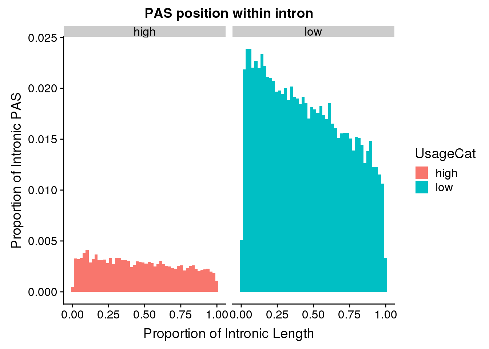
Look at different intron lengths:
First i want to look at the distribution of intorn lengths:
ggplot(pas2intron_usage, aes(x=log10(intronLength))) + geom_density()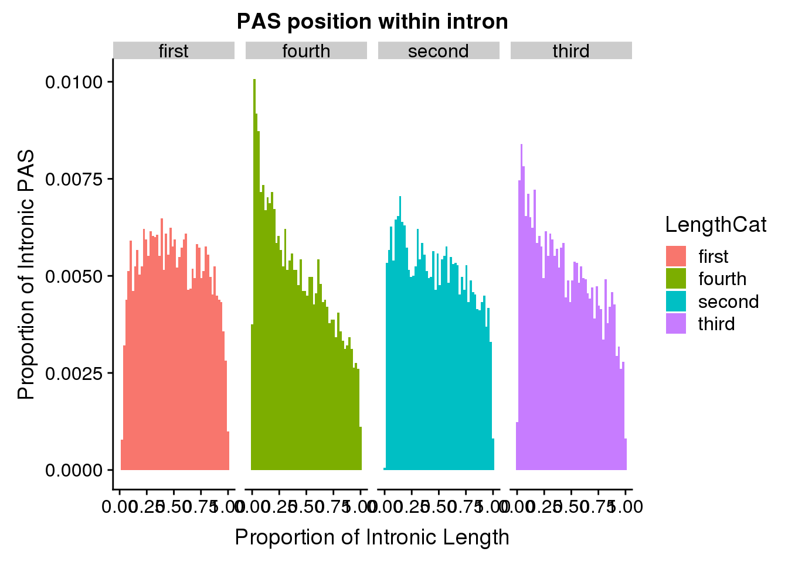
I will look at above and below the mean intron length:
meanIntronlength=mean(pas2intron_usage$intronLength)
pas2intron_length=pas2intron %>% mutate(LengthCat=ifelse(intronLength<=meanIntronlength, "bottom", "top"))
ggplot(pas2intron_length, aes(x=propIntron, fill=LengthCat)) + geom_histogram(bins=50, aes(y=..count../33345)) + labs(title="PAS position within intron", y="Proportion of Intronic PAS", x="Proportion of Intronic Length") + facet_grid(~LengthCat)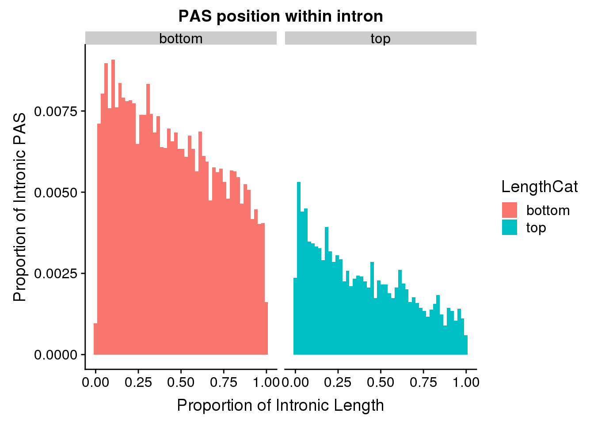
| Version | Author | Date |
|---|---|---|
| 57d8a8c | brimittleman | 2019-05-22 |
ggplot(pas2intron_length, aes(x=distance2PAS, fill=LengthCat)) + geom_histogram(bins=50, aes(y=..count../33345)) + labs(title="PAS position within intron", y="Proportion of Intronic PAS", x="Proportion of Intronic Length") + facet_grid(~LengthCat)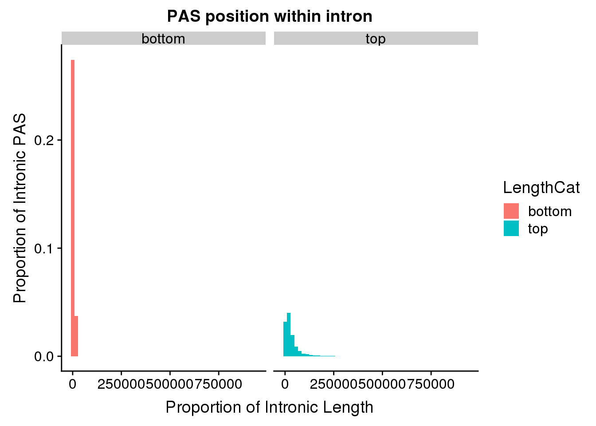
| Version | Author | Date |
|---|---|---|
| 57d8a8c | brimittleman | 2019-05-22 |
Look at quartiles:
summary(pas2intron_usage$intronLength) Min. 1st Qu. Median Mean 3rd Qu. Max.
106 3929 9220 22248 24094 1102540 pas2intron_length2=pas2intron %>% mutate(LengthCat=ifelse(intronLength<=3929, "first", ifelse(intronLength>3929 &intronLength<=9220, "second", ifelse(intronLength>9220 &intronLength<=24094, "third", "fourth"))))
pas2intron_length2$LengthCat <- factor(pas2intron_length2$LengthCat, levels=c("first", "second", "third", "fourth"))
ggplot(pas2intron_length2, aes(x=propIntron, fill=LengthCat)) + geom_histogram(bins=50, aes(y=..count../33345)) + labs(title="PAS position within intron \n Nuclear intronic PAS", y="Proportion of Intronic PAS", x="Proportion of Intronic Length") + facet_grid(~LengthCat)+theme(axis.text.x = element_text(angle = 90, hjust = 1))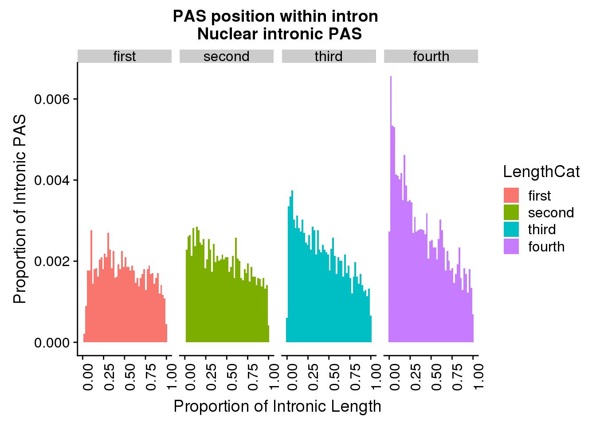
ggplot(pas2intron_length2, aes(x=log(distance2PAS)), by=LengthCat, col=LengthCat) + stat_ecdf(aes(col=LengthCat)) 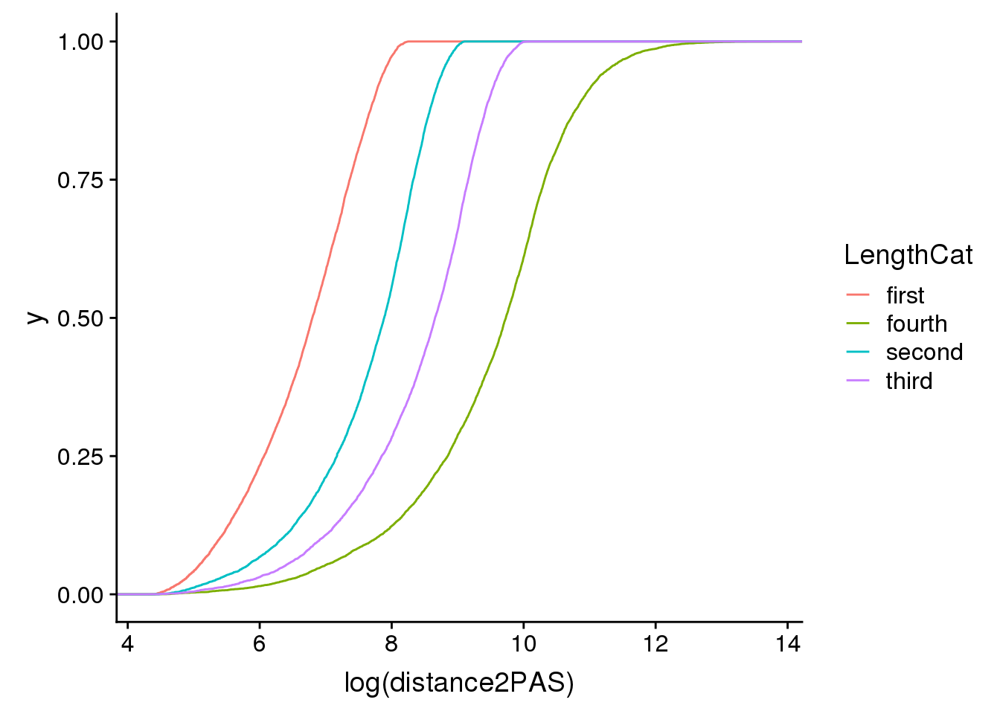
Look at distribution in total fraction:
totIntronicPeaks=read.table("../data/peaks_5perc/APApeak_Peaks_GeneLocAnno.Total.5perc.fc", stringsAsFactors = F, header = F,col.names = c("chr", "start", "end", "gene", "loc", "strand", "peak", "avgUsage")) %>% filter(loc=="intron")
totIntronicPeaksBed=totIntronicPeaks %>% mutate(ID=paste(peak,gene,loc, sep=":")) %>% dplyr::select(chr, start, end, ID, avgUsage, strand)
write.table(totIntronicPeaksBed, "../data/intron_analysis/TotalIntronicPeaks.bed", col.names = F, row.names = F, quote = F,sep="\t")map these to the intron file
sbatch assignTotIntronpeak2intronlocs.shpas2intronTot=read.table("../data/intron_analysis/TotalIntronPeaksontoIntrons.bed",col.names = c("intronCHR", "intronStart", "intronEnd", "gene", "score", "strand", "peakCHR", "peakStart", "peakEnd", "PeakID", "meanUsage", "peakStrand")) %>% mutate(PASloc=ifelse(strand=="+", peakEnd, peakStart)) %>% dplyr::select(intronStart, intronEnd, gene, strand, PeakID, PASloc ,meanUsage) %>% mutate(intronLength=intronEnd-intronStart , distance2PAS= ifelse(strand=="+", PASloc-intronStart, intronEnd-PASloc), propIntron=distance2PAS/intronLength)
nrow(pas2intronTot)[1] 31954totalplot=ggplot(pas2intronTot, aes(x=propIntron)) + geom_histogram(bins=50, aes(y=..count../31954)) + labs(title="PAS position within intron \nfor total PAS", y="Proportion of Intronic PAS", x="Proportion of Intronic Length")plot_grid(totalplot, nuclearplot)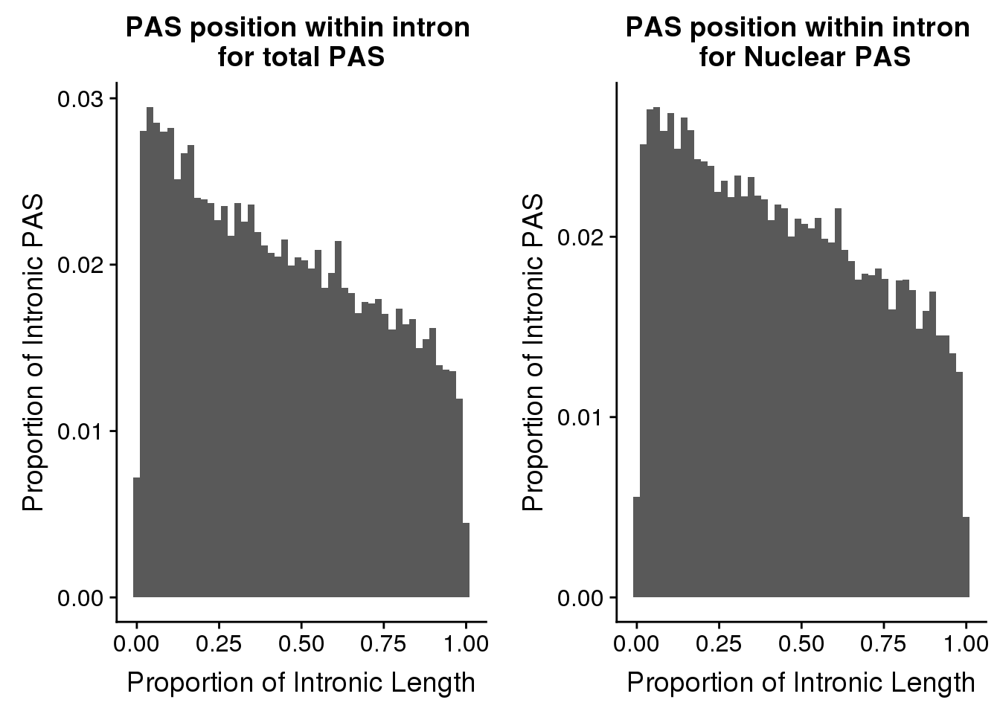
| Version | Author | Date |
|---|---|---|
| 57d8a8c | brimittleman | 2019-05-22 |
summary(pas2intronTot$intronLength) Min. 1st Qu. Median Mean 3rd Qu. Max.
106 3785 8872 21032 22928 1102540 pas2intron_totlength2=pas2intronTot %>% mutate(LengthCat=ifelse(intronLength<=3785, "first", ifelse(intronLength>3785 &intronLength<=8872, "second", ifelse(intronLength>8872 &intronLength<=22928, "third", "fourth"))))
pas2intron_totlength2$LengthCat <- factor(pas2intron_totlength2$LengthCat, levels=c("first", "second", "third", "fourth"))
ggplot(pas2intron_totlength2, aes(x=propIntron, fill=LengthCat)) + geom_histogram(bins=50, aes(y=..count../31954)) + labs(title="PAS position within intron \n Total intronic PAS", y="Proportion of Intronic PAS", x="Proportion of Intronic Length") + facet_grid(~LengthCat) + theme(axis.text.x = element_text(angle = 90, hjust = 1))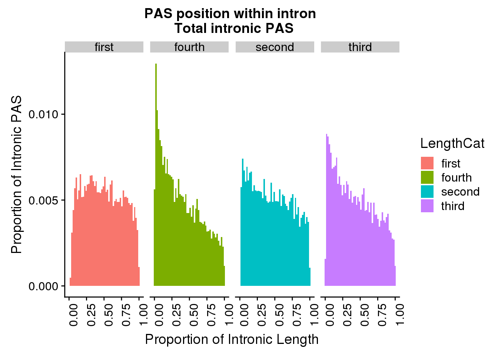
Look by differences in \(\Delta\) PAU.
effectsize=read.table("../data/DiffIso/TN_diff_isoform_AllChrom_effect_sizes.txt", stringsAsFactors = F, col.names=c('PAS', 'logef' ,'Nuclear', 'Total','deltaPAU')) %>% filter(PAS != "intron") %>% dplyr::select(PAS, deltaPAU)pas2intronNuc=read.table("../data/intron_analysis/IntronPeaksontoIntrons.bed",col.names = c("intronCHR", "intronStart", "intronEnd", "gene", "score", "strand", "peakCHR", "peakStart", "peakEnd", "PeakID", "meanUsage", "peakStrand")) %>% mutate(PAS=paste(peakCHR, peakStart, peakEnd, gene, sep=":")) %>% inner_join(effectsize, by="PAS") %>% mutate(PASloc=ifelse(strand=="+", peakEnd, peakStart)) %>% dplyr::select(intronStart, intronEnd, gene, strand, PeakID, PASloc ,meanUsage, deltaPAU) %>% mutate(intronLength=intronEnd-intronStart , distance2PAS= ifelse(strand=="+", PASloc-intronStart, intronEnd-PASloc), propIntron=distance2PAS/intronLength)
pas2intronNuc$deltaPAU= as.numeric(pas2intronNuc$deltaPAU)Plot relationship between delta PAU and distance to proporiton of intron
ggplot(pas2intronNuc, aes(x=propIntron, y=deltaPAU)) + geom_point() + geom_density2d(col="red")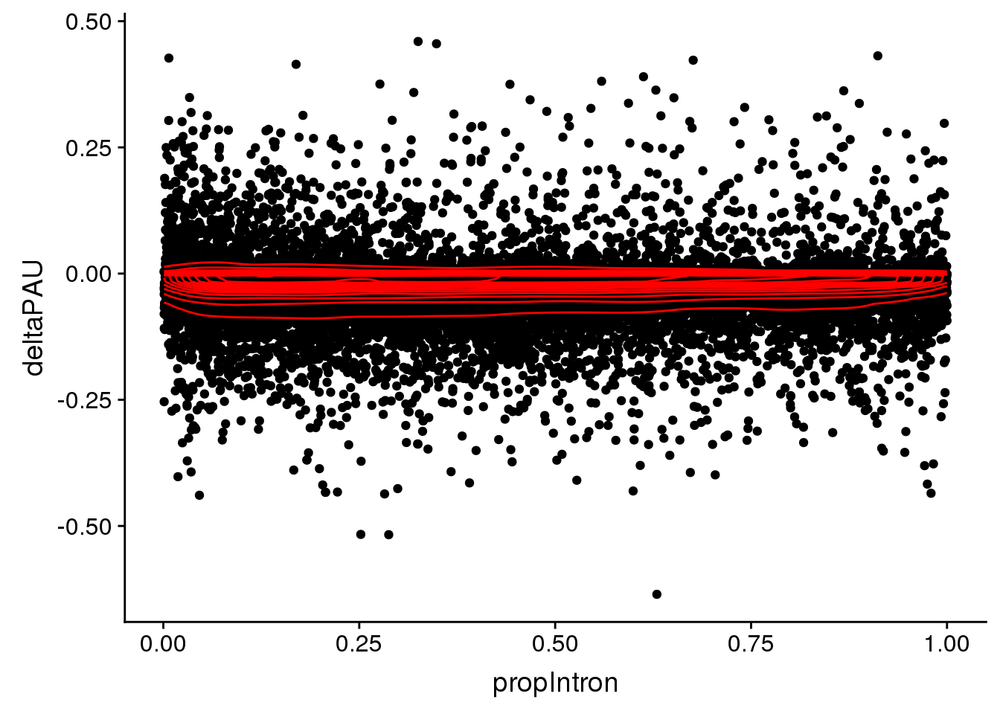
| Version | Author | Date |
|---|---|---|
| ab26926 | brimittleman | 2019-05-22 |
pas2intronNuc_cat=pas2intronNuc %>% mutate(Fraction=ifelse(deltaPAU <= -0.2, "NuclearSpecific", ifelse(deltaPAU>-.2 &deltaPAU < .2, "NotDiff", "TotalEnriched"))) %>% mutate(LengthCat=ifelse(intronLength<=3929, "first", ifelse(intronLength>3929 &intronLength<=9220, "second", ifelse(intronLength>9220 &intronLength<=24094, "third", "fourth"))))
pas2intronNuc_cat$LengthCat <- factor(pas2intronNuc_cat$LengthCat, levels=c("first", "second", "third", "fourth"))Plot this:
ggplot(pas2intronNuc_cat, aes(y=propIntron, x=Fraction, fill=Fraction)) + geom_boxplot(alpha=.5) + facet_grid(~LengthCat) + theme(axis.text.x = element_text(angle = 90, hjust = 1)) 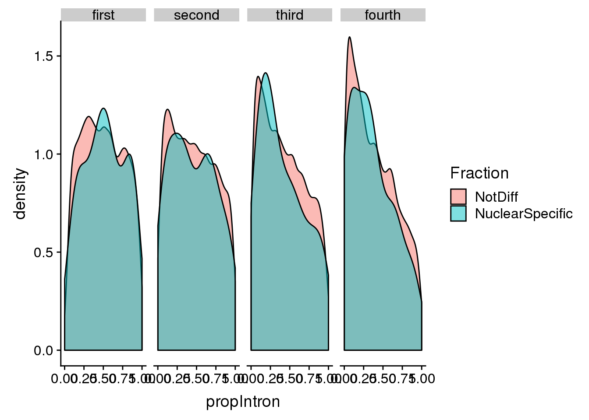
ggplot(pas2intronNuc_cat, aes(x=propIntron, by=Fraction, fill=Fraction)) + geom_density(alpha=.5) + facet_grid(~LengthCat) + theme(axis.text.x = element_text(angle = 90, hjust = 1))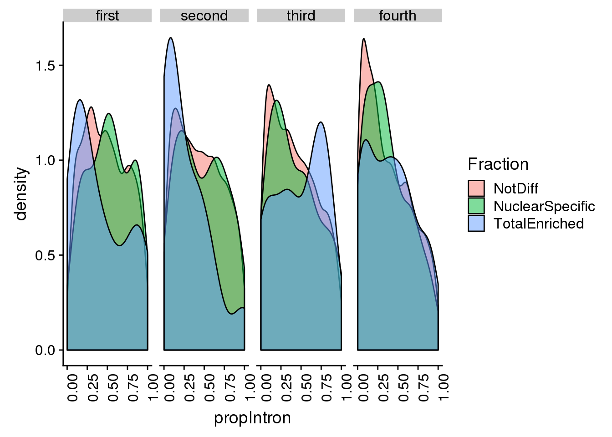
ggplot(pas2intronNuc_cat, aes(y=propIntron, x=Fraction, fill=Fraction)) + geom_boxplot(alpha=.5) + theme(axis.text.x = element_text(angle = 90, hjust = 1)) 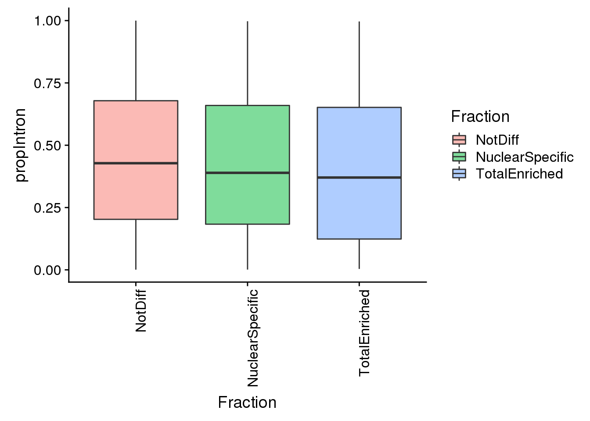
| Version | Author | Date |
|---|---|---|
| ef24758 | brimittleman | 2019-05-23 |
pas2intronTotal=read.table("../data/intron_analysis/TotalIntronPeaksontoIntrons.bed",col.names = c("intronCHR", "intronStart", "intronEnd", "gene", "score", "strand", "peakCHR", "peakStart", "peakEnd", "PeakID", "meanUsage", "peakStrand")) %>% mutate(PAS=paste(peakCHR, peakStart, peakEnd, gene, sep=":")) %>% inner_join(effectsize, by="PAS") %>% mutate(PASloc=ifelse(strand=="+", peakEnd, peakStart)) %>% dplyr::select(intronStart, intronEnd, gene, strand, PeakID, PASloc ,meanUsage, deltaPAU) %>% mutate(intronLength=intronEnd-intronStart , distance2PAS= ifelse(strand=="+", PASloc-intronStart, intronEnd-PASloc), propIntron=distance2PAS/intronLength)
pas2intronTotal$deltaPAU= as.numeric(pas2intronTotal$deltaPAU)
pas2intronTotal_cat=pas2intronTotal %>% mutate(Fraction=ifelse(deltaPAU <= -0.1, "NuclearEnriched", ifelse(deltaPAU>-.1 &deltaPAU < .1, "NotDiff", "TotalEnriched"))) %>% mutate(LengthCat=ifelse(intronLength<=3785, "first", ifelse(intronLength>3785 &intronLength<=8872, "second", ifelse(intronLength>8872 &intronLength<=22928, "third", "fourth"))))%>% group_by(gene) %>% mutate(Intornid=ifelse(strand=="+", 1:n(),n():1)) %>% ungroup()
pas2intronTotal_cat$LengthCat <- factor(pas2intronTotal_cat$LengthCat, levels=c("first", "second", "third", "fourth"))
ggplot(pas2intronTotal_cat, aes(x=propIntron, by=Fraction, fill=Fraction)) + geom_density(alpha=.5) + facet_grid(~Intornid) + theme(axis.text.x = element_text(angle = 90, hjust = 1)) Warning: Groups with fewer than two data points have been dropped.
Warning: Groups with fewer than two data points have been dropped.
Warning: Groups with fewer than two data points have been dropped.
Warning: Groups with fewer than two data points have been dropped.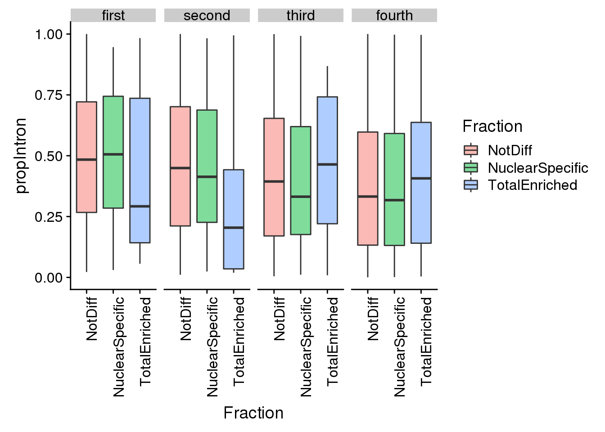
Fascet analysis by which number intron in a gene. I need to reverse the ordering for the negative strand.
First group by gene:
pas2intronNuc_exonofgene= pas2intronNuc_cat %>% group_by(gene) %>% mutate(Intornid=ifelse(strand=="+", 1:n(),n():1))ggplot(pas2intronNuc_exonofgene, aes(x=propIntron,fill=LengthCat)) + geom_histogram(bins=50) + facet_grid(LengthCat~Intornid) + theme(axis.text.x = element_text(angle = 90, hjust = 1))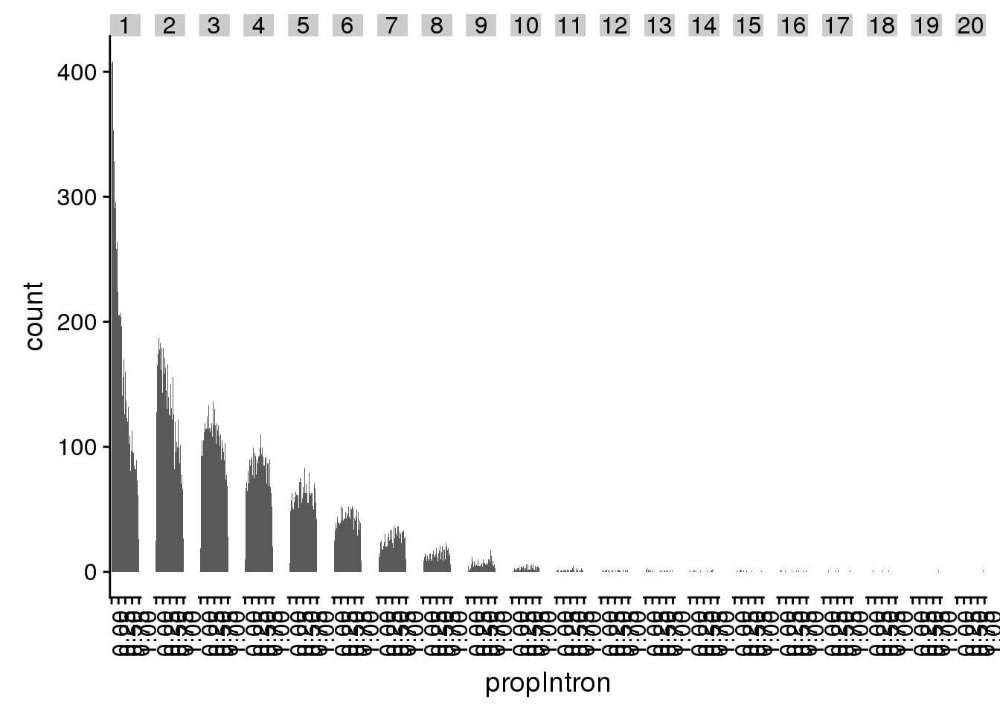
| Version | Author | Date |
|---|---|---|
| 491253b | brimittleman | 2019-05-24 |
I’d like to look at just the first exon and the top 50% intron length
pas2intronTotal_cat_first=pas2intronTotal_cat %>% filter(Intornid==1) %>% mutate(LengthHalf=ifelse(intronLength<=8872, "Short", "Long"))
ggplot(pas2intronTotal_cat_first, aes(x=propIntron, by=Fraction, fill=Fraction)) + geom_density(alpha=.5) + facet_grid(~LengthHalf) + theme(axis.text.x = element_text(angle = 90, hjust = 1)) + labs(title="First intron proportion of the intron\n by intron length and delta PAU")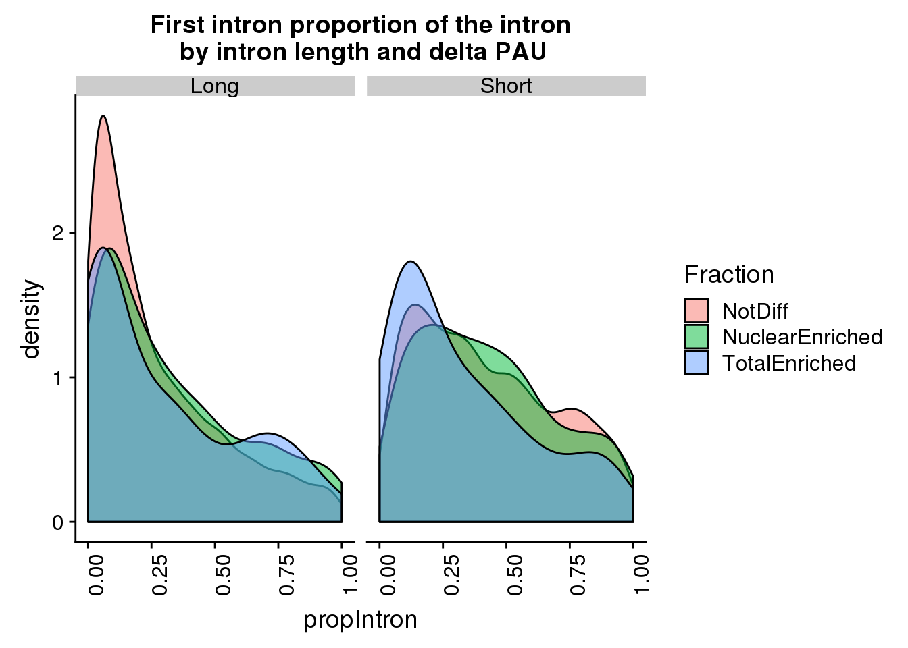
| Version | Author | Date |
|---|---|---|
| 491253b | brimittleman | 2019-05-24 |
Took at distance to TSS.
I have the merged transcript gene file and I will remove 5’ UTRs.
I can pull in the merged transcript gene.
fiveprimeUTRs=read.table("../../genome_anotation_data/RefSeq_annotations/ncbiRefSeq_FormatedallAnnotation.sort.bed", col.names = c("CHR", "start", "end", "ID", "score", "strand"),stringsAsFactors = F)%>% separate(ID, into=c("loc", "gene"),sep=":") %>% filter(loc=="utr5") %>% dplyr::select(-loc) %>% mutate(CHR=paste("chr", CHR, sep=""))
write.table(fiveprimeUTRs, file="../data/intron_analysis/fiveprimeloc.bed", quote=F, col.names = F, row.names = F, sep="\t")sort -k1,1 -k2,2n ../data/intron_analysis/fiveprimeloc.bed > ../data/intron_analysis/fiveprimeloc.sort.bedsbatch subtractfiveprimeUTR.shtss=read.table("../data/intron_analysis/transcriptsMinus5UTR.bed",col.names = c("chr", "start", "end", "gene", "score", "strand"), stringsAsFactors = F) %>% mutate(TSS=ifelse(strand=="+", start, end)) %>% dplyr::select(TSS, gene)pas2intronTotal_cat$gene= as.character(pas2intronTotal_cat$gene)
pas2intronTotal_catTSS= pas2intronTotal_cat %>% inner_join(tss, by="gene") %>% mutate(dist2TSS= ifelse(strand=="+", abs(PASloc-TSS), abs(TSS-PASloc))) %>% filter(dist2TSS<10000)
ggplot(pas2intronTotal_catTSS, aes(x=dist2TSS, by=Fraction, fill=Fraction)) + geom_density(alpha=.5) + labs(title="Distance to TSS by delta PAU first 10KB", x="Distance to TSS")+ theme(axis.text.x = element_text(angle = 90, hjust = 1)) 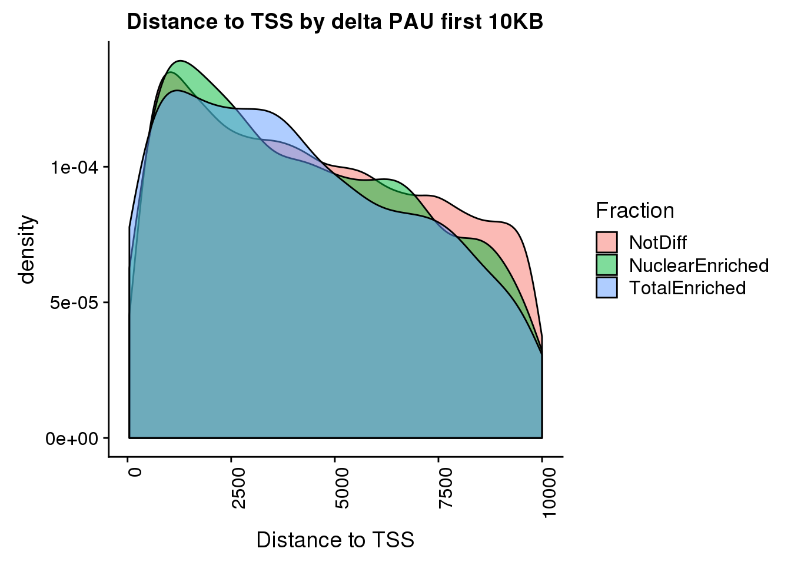
| Version | Author | Date |
|---|---|---|
| 491253b | brimittleman | 2019-05-24 |
pas2intronTotal_catTSS %>% group_by(Fraction) %>% summarise(n())# A tibble: 3 x 2
Fraction `n()`
<chr> <int>
1 NotDiff 32321
2 NuclearEnriched 1803
3 TotalEnriched 607ggplot(pas2intronTotal_catTSS, aes(x=dist2TSS, by=Fraction, fill=Fraction)) + geom_density(alpha=.5) + labs(title="Distance to TSS by delta PAU", x="Distance to TSS")+ theme(axis.text.x = element_text(angle = 90, hjust = 1)) + scale_x_log10() + facet_grid(~Intornid)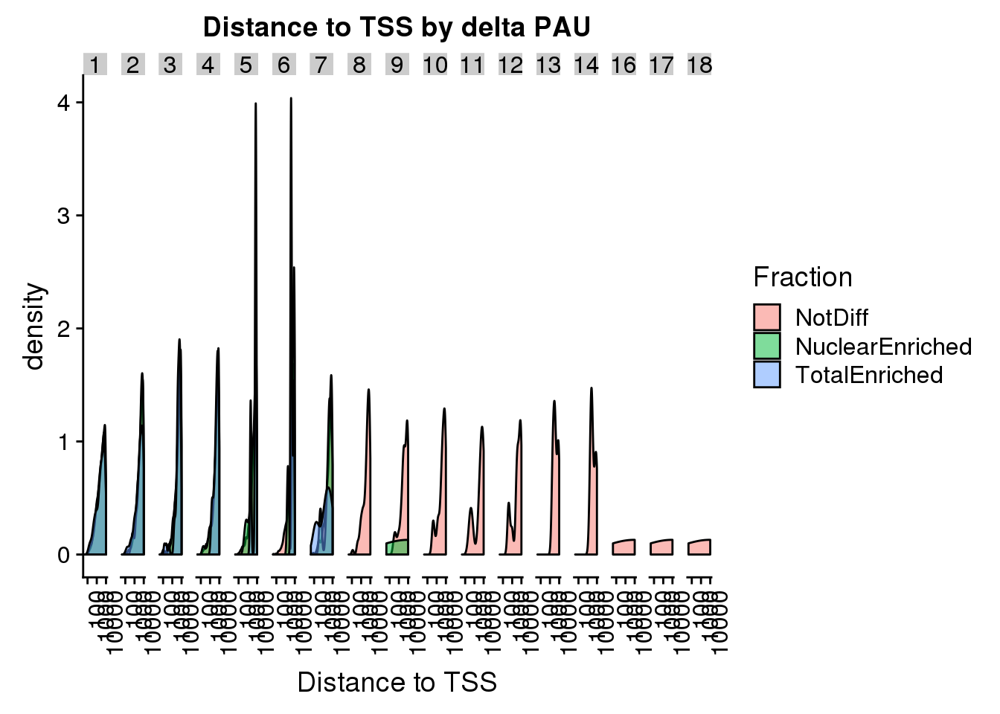
| Version | Author | Date |
|---|---|---|
| 491253b | brimittleman | 2019-05-24 |
pas2intronTotal_catTSS_first=pas2intronTotal_catTSS %>% filter(Intornid==1, dist2TSS<10000)
ggplot(pas2intronTotal_catTSS_first, aes(x=dist2TSS, by=Fraction, fill=Fraction)) + geom_density(alpha=.5) + labs(title="Distance to TSS for first exon first 10KB",x="Distance to TSS") + theme(axis.text.x = element_text(angle = 90, hjust = 1)) 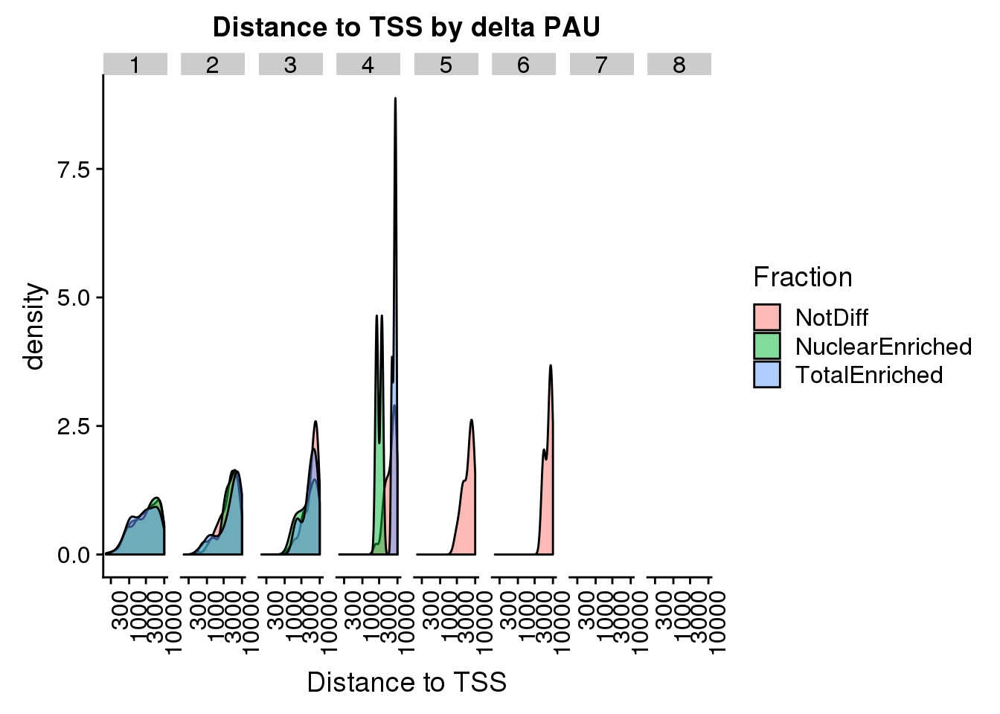
| Version | Author | Date |
|---|---|---|
| 491253b | brimittleman | 2019-05-24 |
pas2intronTotal_catTSS_first %>% group_by(Fraction) %>% summarise(n())# A tibble: 3 x 2
Fraction `n()`
<chr> <int>
1 NotDiff 12119
2 NuclearEnriched 1107
3 TotalEnriched 300FirstIntron= read.table("../data/intron_analysis/transcriptsMinusExons.sort.bed", stringsAsFactors = F, col.names=c("chr", "start", "end", "gene", "score", "strand")) %>% group_by(gene) %>% mutate(Intornid=ifelse(strand=="+", 1:n(),n():1)) %>% mutate(Chr=str_sub(chr, 4, str_length(chr))) %>% filter(Intornid==1) %>% select(Chr, start, end ,gene ,score ,strand)
write.table(FirstIntron,file="../data/intron_analysis/FirstIntronOnly.bed", col.names = F, row.names = F, quote=F, sep="\t")Sort this:
sort -k1,1 -k2,2n ../data/intron_analysis/FirstIntronOnly.bed > ../data/intron_analysis/FirstIntronOnly_Sort.bedFourthIntron= read.table("../data/intron_analysis/transcriptsMinusExons.sort.bed", stringsAsFactors = F, col.names=c("chr", "start", "end", "gene", "score", "strand")) %>% group_by(gene) %>% mutate(Intornid=ifelse(strand=="+", 1:n(),n():1)) %>% mutate(Chr=str_sub(chr, 4, str_length(chr))) %>% filter(Intornid==4) %>% select(Chr, start, end ,gene ,score ,strand)
write.table(FourthIntron,file="../data/intron_analysis/FourthIntronOnly.bed", col.names = F, row.names = F, quote=F, sep="\t")Sort this:
sort -k1,1 -k2,2n ../data/intron_analysis/FourthIntronOnly.bed > ../data/intron_analysis/FourthIntronOnly_Sort.bedSeperate plots by expression:
geneNames=read.table("../../genome_anotation_data/ensemble_to_genename.txt", sep="\t", col.names = c('gene_id', 'GeneName', 'source' ),stringsAsFactors = F) %>% select(-source)
RNA_TPM=read.table('../data/RNAseq/kallisto_RNAseq.txt', stringsAsFactors = F,header = T) %>% dplyr::rename("gene_id"=gene) %>% inner_join(geneNames,by="gene_id" )
RNA_TPMmeans=rowMeans(RNA_TPM[,2:21])
RNA_TPMmeanName=as.data.frame(cbind(gene=RNA_TPM$GeneName, RPKM=RNA_TPMmeans))
RNA_TPMmeanName$RPKM=as.numeric(as.character(RNA_TPMmeanName$RPKM))
summary(RNA_TPMmeanName$RPKM) Min. 1st Qu. Median Mean 3rd Qu. Max.
0.000 0.214 0.523 17.301 2.379 16253.029 RNA_TPMmeanName_cat=RNA_TPMmeanName %>% mutate(RPKM_quart=ifelse(RPKM<=.214, "first", ifelse(RPKM > .214 & RPKM<= .523, "second", ifelse(RPKM >.523 & RPKM <= 2.379,"third", "fourth"))))
RNA_TPMmeanName_cat$RPKM_quart <- factor(RNA_TPMmeanName_cat$RPKM_quart, levels=c("first", "second", "third", "fourth"))pas2intronNuc_exonofgene$gene=as.character(pas2intronNuc_exonofgene$gene)
RNA_TPMmeanName_cat$gene=as.character(RNA_TPMmeanName_cat$gene)
pas2intronNuc_exonofgene_rpkm= pas2intronNuc_exonofgene %>% inner_join(RNA_TPMmeanName_cat, by="gene")
ggplot(pas2intronNuc_exonofgene_rpkm, aes(x=propIntron,fill=RPKM_quart)) + geom_histogram(bins=50) + facet_grid(RPKM_quart~Intornid) + theme(axis.text.x = element_text(angle = 90, hjust = 1)) + labs(title="Location of Intronic Peaks by intron and expression")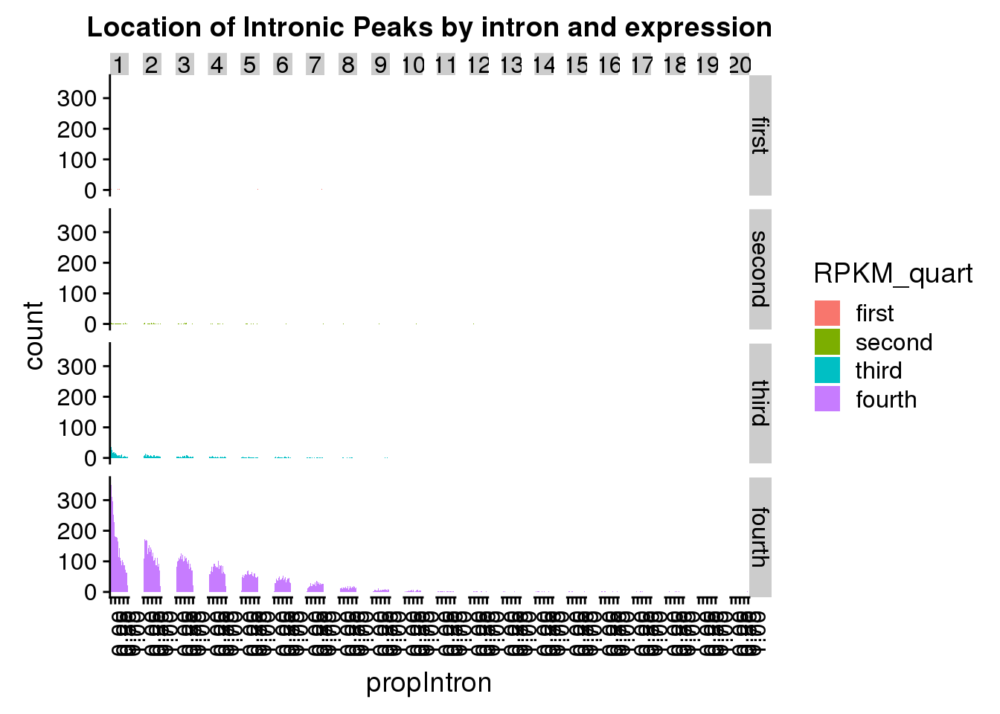
Filter just to the fourth quartile and divide this into 4 categories.
pas2intronNuc_exonofgene_rpkm_topexp=pas2intronNuc_exonofgene_rpkm %>% filter(RPKM_quart=="fourth")
summary(pas2intronNuc_exonofgene_rpkm_topexp$RPKM) Min. 1st Qu. Median Mean 3rd Qu. Max.
2.384 10.329 20.795 50.089 43.011 11185.798 pas2intronNuc_exonofgene_rpkm_topexp= pas2intronNuc_exonofgene_rpkm_topexp %>%mutate(RPKM_quartTop=ifelse(RPKM<=10.329, "first", ifelse(RPKM > 10.329 & RPKM<= 20.795, "second", ifelse(RPKM >20.795 & RPKM <= 43.011,"third", "fourth"))))
pas2intronNuc_exonofgene_rpkm_topexp$RPKM_quartTop <- factor(pas2intronNuc_exonofgene_rpkm_topexp$RPKM_quartTop, levels=c("first", "second", "third", "fourth"))
ggplot(pas2intronNuc_exonofgene_rpkm_topexp, aes(x=propIntron,fill=RPKM_quartTop)) + geom_histogram(bins=50) + facet_grid(RPKM_quartTop~Intornid) + theme(axis.text.x = element_text(angle = 90, hjust = 1)) + labs(title="Location of Intronic Peaks by intron and expression")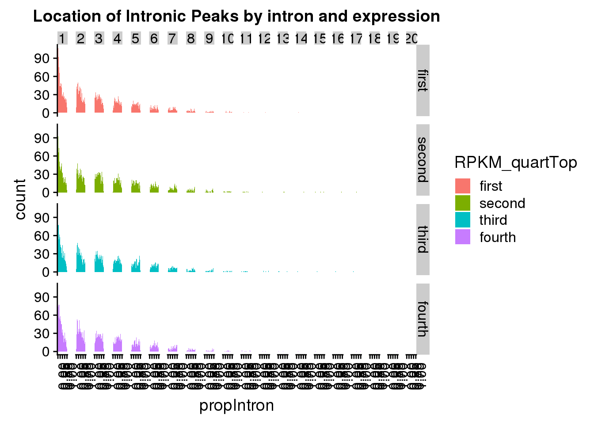
sessionInfo()R version 3.5.1 (2018-07-02)
Platform: x86_64-pc-linux-gnu (64-bit)
Running under: Scientific Linux 7.4 (Nitrogen)
Matrix products: default
BLAS/LAPACK: /software/openblas-0.2.19-el7-x86_64/lib/libopenblas_haswellp-r0.2.19.so
locale:
[1] LC_CTYPE=en_US.UTF-8 LC_NUMERIC=C
[3] LC_TIME=en_US.UTF-8 LC_COLLATE=en_US.UTF-8
[5] LC_MONETARY=en_US.UTF-8 LC_MESSAGES=en_US.UTF-8
[7] LC_PAPER=en_US.UTF-8 LC_NAME=C
[9] LC_ADDRESS=C LC_TELEPHONE=C
[11] LC_MEASUREMENT=en_US.UTF-8 LC_IDENTIFICATION=C
attached base packages:
[1] stats graphics grDevices utils datasets methods base
other attached packages:
[1] cowplot_0.9.4 workflowr_1.3.0 forcats_0.3.0 stringr_1.3.1
[5] dplyr_0.8.0.1 purrr_0.3.2 readr_1.3.1 tidyr_0.8.3
[9] tibble_2.1.1 ggplot2_3.1.1 tidyverse_1.2.1
loaded via a namespace (and not attached):
[1] tidyselect_0.2.5 reshape2_1.4.3 haven_1.1.2 lattice_0.20-38
[5] colorspace_1.3-2 generics_0.0.2 htmltools_0.3.6 yaml_2.2.0
[9] utf8_1.1.4 rlang_0.3.1 pillar_1.3.1 glue_1.3.0
[13] withr_2.1.2 modelr_0.1.2 readxl_1.1.0 plyr_1.8.4
[17] munsell_0.5.0 gtable_0.2.0 cellranger_1.1.0 rvest_0.3.2
[21] evaluate_0.12 labeling_0.3 knitr_1.20 fansi_0.4.0
[25] broom_0.5.1 Rcpp_1.0.0 scales_1.0.0 backports_1.1.2
[29] jsonlite_1.6 fs_1.2.6 hms_0.4.2 digest_0.6.18
[33] stringi_1.2.4 grid_3.5.1 rprojroot_1.3-2 cli_1.0.1
[37] tools_3.5.1 magrittr_1.5 lazyeval_0.2.1 crayon_1.3.4
[41] whisker_0.3-2 pkgconfig_2.0.2 MASS_7.3-51.1 xml2_1.2.0
[45] lubridate_1.7.4 assertthat_0.2.0 rmarkdown_1.10 httr_1.3.1
[49] rstudioapi_0.10 R6_2.3.0 nlme_3.1-137 git2r_0.23.0
[53] compiler_3.5.1